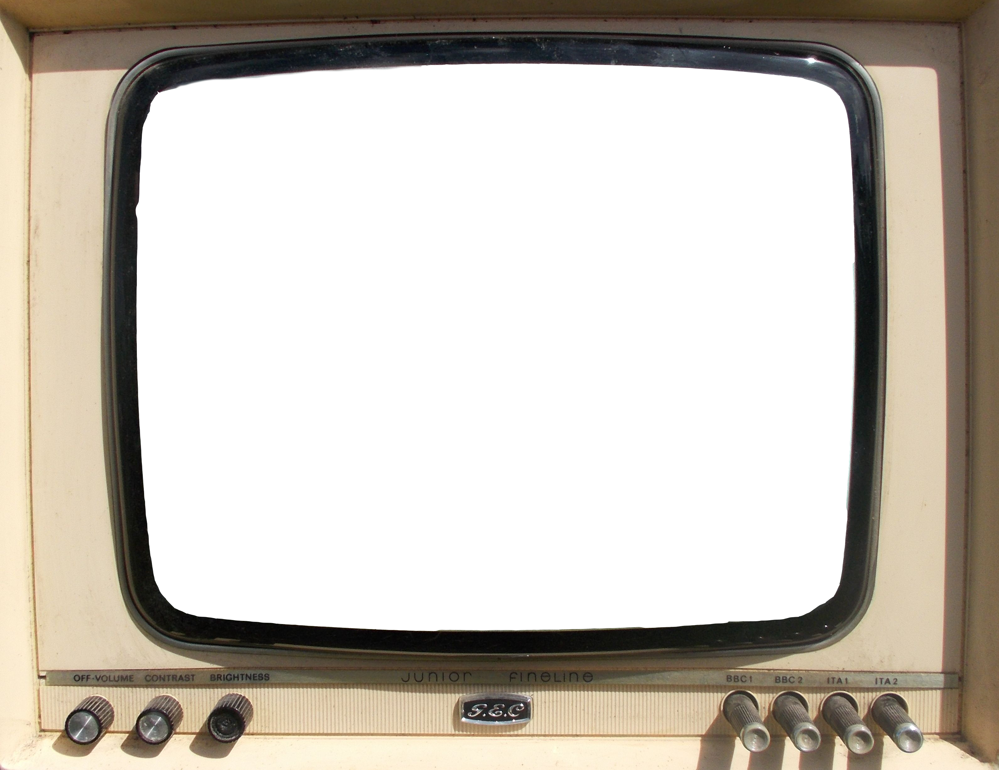

<div class="main" *ngIf="{ 
  config: config$ | async,
  karaokeUrl: karaokeUrl$ | async,
  karaokeUser: karaokeUser$ | async
} as obs$">
  <div class="rt-viewer" >
    <ng-container *ngIf="admin || !admin && obs$.config?.showOpen; else landingPageTemplate">
      <div class="stream-wrapper" [class.duo]="admin">
        <!-- <div class="stream">
          <iframe src="https://viewer.millicast.com?streamId=BNfr94/BQFKN" allowfullscreen></iframe>
        </div> -->
        <div class="stream">
          <ng-container *ngIf="obs$?.karaokeUser?.vmixEmbed; else dolbyStreamTemplate">
            <div class="vmix">
              <iframe allow="camera *; microphone *" [attr.src]="obs$?.karaokeUser?.url" allowfullscreen></iframe>
            </div>
          </ng-container>
          <ng-template #dolbyStreamTemplate>
            <iframe src="https://viewer.millicast.com?streamId=BNfr94/BQFKN" allowfullscreen></iframe>
          </ng-template>
        </div>
  
    
        <div class="stream" [class.overlay]="!admin" [class.hide]="!admin && stream !== 'meshcast'">
          <iframe 
            src="https://vdo.ninja/?scene&room=BQFKN_Backstage&noaudio" 
            allowfullscreen>
          </iframe>
        </div>
      </div>
      <div *ngIf="admin" class="admin-panel">
        <ng-container>

          <div class="show-status" [class.open]="obs$?.config?.showOpen" [class.closed]="!obs$?.config?.showOpen">
            <button (click)="toggleShowOpen(obs$?.config?.showOpen)">
              {{ obs$?.config?.showOpen ? 'Close Show' : 'Open Show'}}
            </button>
            <em>{{ obs$?.config?.showOpen ? 'Show is Open!' : 'Show is Closed'}}</em>
          </div>
          <div class="admin-form">
            <div class="karaoke-user" *ngFor="let ku of karaokeUsers; let i = index">
              <div class="header-switch">
                <h3>{{ku?.name}}</h3>          
                <ui-switch 
                  class="flex-row" 
                  (valueChange)="onChangeKaraokeSwitch($event, i)"
                  [(ngModel)]="karaokeUsers[i].vmixEmbed">
                </ui-switch>
              </div>
              <app-inline-edit
                type="input"
                theme="dark"
                [copy]="false"
                aria-placeholder="VMix URL"
                [monospace]="true"
                (valueChange)="onChangeKaraokeUrl($event, i)"
                [(ngModel)]="karaokeUsers[i].url"
              >
              </app-inline-edit>
            </div>
          </div>
  
        </ng-container>
      </div>
      <div class="stream-btns" *ngIf="!admin">
        <h2>Camera</h2>
        <button class="push--flat" [class.active]="stream === 'dolby'" (click)="setStream('dolby')">1</button>
        <button class="push--flat" [class.active]="stream === 'meshcast'" (click)="setStream('meshcast')">2</button>
      </div>
    </ng-container>
    <ng-template #landingPageTemplate>
      <div class="landing-logo">
        
      </div>
    </ng-template>

    <!--  -->
  </div>
  <div class="rt-chat" *ngIf="chatUrl">
    <iframe [attr.src]="chatUrl"></iframe>
  </div>
</div>
